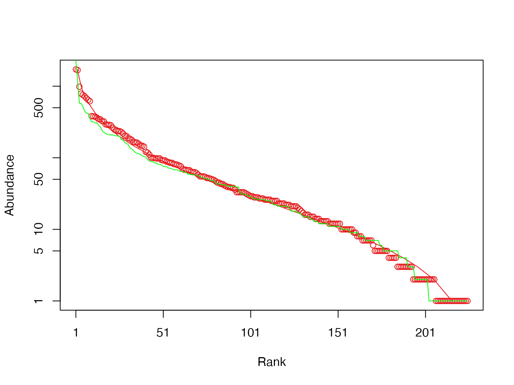

2 Outils
La diversité peut être décrite localement par une courbe d’accumulation (SAC) qui représente le nombre d’espèces échantillonnées en fonction de l’effort. À une échelle plus large, cette courbe s’appelle relation aire-espèces (SAR).
La distribution des abondances des espèces (SAD) est représentée par une histogramme des fréquences ou un diagramme rang-abondance.
Le taux de couverture est la somme des probabilités des espèces observées étant donné l’effort d’échantillonnage. Il peut être estimé précisément à partir des données d’inventaire. Le taux de complétude est la proportion (en nombre) des espèces observées.
Quelques outils sont nécessaires avant d’entrer dans le coeur du sujet. Les relations décrivant le nombre d’espèces en fonction de la taille de l’échantillon (relations aire-espèces) et la distribution de l’abondance des espèces sont importants pour les écologues. La mesure de l’exhaustivité de l’échantillonnage par le taux de couverture sera la base de l’estimation de la diversité à partir de données réelles.
2.1 Courbes d’accumulation
Figure 2.1: Courbe d’accumulation des espèces d’arbres du dispositif de Barro Colorado Island. Le nombre d’espèces est cumulé dans l’ordre des carrés d’un hectare du dispositif.
Evaluer la diversité d’une communauté nécessite en pratique de l’inventorier. Le nombre d’espèces découvertes en fonction de l’effort d’échantillonnage permet de tracer une courbe d’accumulation (SAC: Species Acumulation Curve). Une courbe de raréfaction (Rarefaction Curve) peut être calculée en réduisant par des outils statistiques l’effort d’échantillonnage réel pour obtenir une SAC théorique, libérée des aléas de l’ordre de prise en compte des données.
La figure 2.1 montre l’accumulation des espèces pour les données de BCI. Une SAC peut être tracée en fonction de la surface, du nombre d’individus ou du nombres de placettes d’échantillonnage, selon les besoins.
Code R pour réaliser la figure 2.1:
library("vegan")
data(BCI)
Cumul <- apply(BCI, 2, cumsum)
Richesse <- apply(Cumul, 1, function(x) sum(x > 0))
SARplot <- ggplot(data.frame(A = 0:50,
S = c(0, Richesse))) +
aes(A, S) +
geom_line() +
labs(x = "Surface (ha)")
SARplotLes courbes d’accumulation peuvent aussi concerner la diversité (voir le chapitre ??), mesurée au-delà du nombre d’espèces.
Plus généralement, une courbe aire-espèces (SAR: Species Area Relationship) représente le nombre d’espèces observées en fonction de la surface échantillonnée (figure ??). Il existe plusieurs façons de prendre en compte cette relation (Scheiner 2003), classables en deux grandes familles (Dengler 2009):
- Dans une SAR au sens strict, chaque point représente une communauté. La question traitée est la relation entre le nombre d’espèces et la taille de chaque communauté, en lien avec des processus écologiques;
- Une courbe d’accumulation (SAC) ne représente que l’effet statistique de l’échantillonnage. Pour éviter toute confusion, le terme SAR ne doit pas être utilisé pour décrire une SAC.
2.2 Diversité asymptotique
Augmenter l’effort d’échantillonnage peut permettre d’atteindre un stade où la diversité n’augmente plus: sa valeur est appelée diversité asymptotique. Dans des communautés très diverses comme les forêts tropicales, la diversité asymptotique ne peut en général pas être observée sur le terrain à cause de la variabilité de l’environnement: l’augmentation de la surface inventoriée amène à échantillonner dans des communautés différentes avant d’atteindre la diversité asymptotique de la communauté étudiée. La diversité asymptotique est donc celle d’une communauté théorique qui n’existe généralement pas. En d’autres termes, c’est la diversité d’une communauté dont l’inventaire disponible serait un échantillon représentatif.
Evaluer la diversité asymptotique nécessite d’utiliser des estimateurs de diversité, dont la précision dépend de l’exhaustivité de l’échantillonnage. La diversité peut aussi être estimée pour un effort donné: un hectare de forêt ou 5000 arbres par exemple, ou encore un taux de couverture choisi, qui décrit mieux la qualité de l’échantillonnage.
2.3 Taux de couverture
2.3.1 Formule des fréquences de Good-Turing
La relation fondamentale entre les fréquences des espèces dans un échantillon est due à Turing et a été publiée par Good (1953). En absence de toute information sur la loi de distribution des espèces, en supposant seulement que les individus sont tirés indépendamment les uns des autres selon une loi multinomiale respectant ces probabilités, la formule de Good-Turing relie la probabilité moyenne \(\alpha_\nu\) d’une espèce représentée \(\nu\) fois (c’est-à-dire par \(\nu\) individus) au rapport entre les nombres d’espèces représentées \(\nu+1\) fois et \(\nu\) fois:
\[\begin{equation} \tag{2.1} \alpha_\nu \approx \frac{(\nu+1)}{n} \frac{s^{n}_{\nu+1}}{s^{n}_{\nu}}. \end{equation}\]
Les singletons (\(s^{n}_{1}\): le nombre d’espèces observées une seule fois) et les doubletons (\(s^{n}_{2}\): le nombre d’espèces observées deux fois) ont une importance centrale. Pour \(\nu=1\), on a: \(\alpha_1 = 2 s^{n}_{2}/(ns^{n}_{1})\): la fréquence d’une espèce typiquement représentée par un singleton est proportionnelle au rapport entre le nombre des doubletons et des singletons. Pour \(\nu=0\), l’ignorance du nombre d’espèces non échantillonnées \(s^{n}_{0}\) pose problème mais le produit \(\alpha_0 \times s^{n}_{0} = \pi_0\), la probabilité totale des espèces non représentées, peut être estimée par \(s^{n}_{1}/n\). Ces relations sont le fondement des estimateurs de richesse de Chao présentées ci-dessous.
La relation a été précisée (Chiu et al. 2014, eq. 6 et 7a) en limitant les approximations dans les calculs. La seule nécessaire est que les probabilités des espèces représentées le même nombre de fois \(\nu\) varient peu et puissent être considérées toutes égales à \(\alpha_\nu\). Alors, \(\alpha_\nu\) est estimé par \[\begin{equation} \tag{2.2} \hat{\alpha}_\nu = \frac{\left(\nu+1 \right) s^{n}_{\nu+1}}{\left(n-\nu \right) s^{n}_{\nu} + \left(\nu+1 \right) s^{n}_{\nu+1}}. \end{equation}\]
Ce nouvel estimateur est à la base de l’estimateur de Chao amélioré et des estimateurs d’entropie de Chao et Jost (sections ?? et ??).
2.3.2 Taux de couverture et déficit de couverture
Good (1953) définit le taux de couverture (sample coverage) de l’échantillonnage comme la proportion des espèces découvertes, \[\begin{equation} \tag{2.3} C=\sum^S_{s=1}{{\mathbf 1}\left(n_s>0\right)p_s}, \end{equation}\]
où \({\mathbf 1}(\cdot)\) est la fonction indicatrice. Son complément à 1 est appelé déficit de couverture (coverage deficit).
Le taux de couverture augmente avec l’effort d’échantillonnage. Plus il est élevé, meilleures seront les estimations de la diversité. Pour comparer deux communautés par des courbes de raréfaction, Chao and Jost (2012) montrent que le taux de couverture plutôt que la taille de l’échantillon doit être identique. Les estimateurs de la diversité développés plus loin reposent largement sur cette notion pour la correction du biais d’échantillonnage (Dauby and Hardy 2012) (la sous-estimation systématique de la diversité due aux espèces non observées, un des éléments du biais d’estimation).
L’estimateur du taux de couverture, que Good attribue à Turing, est selon la relation des fréquences vues plus haut:
\[\begin{equation} \tag{2.4} \hat{C} = 1-\frac{s^{n}_{1}}{n}. \end{equation}\]
Cet estimateur est biaisé (Z. Zhang and Huang 2007). En réalité, \[\begin{equation} \tag{2.5} C = 1-\frac{{\mathbb E}(S^{n}_{1}) - \pi_1}{n}. \end{equation}\]
L’estimateur de Good néglige le terme \(\pi_1\), la somme des probabilités des espèces observées une fois. Ce terme peut être estimé avec un biais plus petit. Chao, Lee, and Chen (1988) puis Z. Zhang and Huang (2007) proposent l’estimateur suivant, qui utilise toute l’information disponible et a le plus petit biais possible:
\[\begin{equation} \tag{2.6} \hat{C}=1-\sum^{n}_{\nu=1}{\left(-1\right)}^{\nu+1}{\binom{n}{\nu}}^{-1}s^{n}_{\nu}. \end{equation}\]
Les termes de la somme décroissent très vite avec \(\nu\). En se limitant à \(\nu=1\), l’estimateur se réduit à celui de Good.
Esty (1983), complété par C.-H. Zhang and Zhang (2009), a montré que l’estimateur était asymptotiquement normal et a calculé l’intervalle de confiance de \(\hat{C}\):
\[\begin{equation} \tag{2.7} C=\hat{C}\pm t^{n}_{1-\alpha/2} \frac{\sqrt{s^{n}_{1}\left(1-\frac{s^{n}_{1}}{n}\right)+2s^{n}_{2}}}{n}. \end{equation}\]
Où \(t^{n}_{1-\alpha/2}\) est le quantile d’une loi de Student à \(n\) degrés de libertés au seuil de risque \(\alpha\), classiquement 1,96 pour \(n\) grand et \(\alpha=5\%\).
Un autre estimateur est utilisé dans le logiciel SPADE (Chao and Shen 2010) et son portage sous R, le package spadeR (Chao et al. 2016). Il est la base des estimateurs d’entropie de Chao et Jost (section ??). L’estimation de l’équation (2.5) donne la relation \[\begin{equation} \tag{2.8} \hat{C} = 1-\frac{s^{n}_{1} - \hat{\pi}_1}{n}. \end{equation}\]
Or, \(\hat{\pi}_1 = s^{n}_{1} \hat{\alpha}_1\). \(\alpha_1\) peut être estimé par la relation de Good-Turing (2.2), en remplaçant \(s^{n}_{0}\) par l’estimateur Chao1 (??). Alors:
\[\begin{equation} \tag{2.9} \hat{C} = 1-\frac{s^{n}_{1}}{n}(1 - \hat{\alpha}_1) = 1-\frac{s^{n}_{1}}{n}\left[\frac{\left(n-1\right)s^{n}_{1}}{\left(n-1\right)s^{n}_{1}+2s^{n}_{2}}\right]. \end{equation}\]
Dans le package entropart, la fonction Coverage calcule les trois estimateurs (celui de Zhang et Huang par défaut):
library("entropart")
Ns <- colSums(BCI)
Coverage(Ns)## ZhangHuang
## 0.9991146Le taux de couverture de BCI est proche de 1 parce que l’inventaire couvre 50 ha. Il est moindre sur les 6.25 ha de la parcelle 6 de Paracou:
library("SpatDiv")
Coverage(as.AbdVector(Paracou6))## ZhangHuang
## 0.9723258Chao and Jost (2012) montrent que la pente de la courbe d’accumulation donnant l’espérance du nombre d’espèces en fonction du nombre d’individus (courbe de raréfaction de la figure ??) est égale au déficit de couverture,
\[\begin{equation} \tag{2.10} 1-{\mathbb E}\left(C^{n}\right)={\mathbb E}\left(S^{n+1}\right)-{\mathbb E}\left(S^{n}\right), \end{equation}\]
où \(C^{n}\) est le taux de couverture d’un échantillon de taille \(n\) et \(S^{n}\) le nombre d’espèces découvertes dans cet échantillon.
Les estimateurs présentés ici supposent une population de taille infinie (de façon équivalente, les individus sont tirés avec remise). Le cas des populations de taille finie est traité par Chao and Lin (2012) et Hwang, Lin, and Shen (2014).
2.3.3 Complétude
La complétude de l’échantillonnage est la proportion du nombre d’espèces observées: \(s^{n}_{\ne 0}/{S}\). Elle compte simplement les espèces et ne doit pas être confondue avec la couverture qui somme leurs probabilités: le taux de complétude est toujours très inférieur au taux de couverture parce que les espèces non échantillonnées sont les plus rares.
La complétude du même échantillon d’arbres de forêt tropicale que dans l’exemple précédent peut être estimée en divisant le nombre d’espèces observées par le nombre d’espèces estimées (voir section ??). À BCI:
# Espèces observées
(Obs <- Richness(Ns, Correction = "None"))## None
## 225# Richesse estimée
(Est <- Richness(Ns, Correction = "Jackknife"))## Jackknife 1
## 244# Complétude
as.numeric(Obs/Est)## [1] 0.9221311À Paracou:
# Espèces observées
(Obs <- Richness(Paracou6, Correction = "None"))## None
## 334# Richesse estimée
(Est <- Richness(Paracou6, Correction = "Jackknife"))## Jackknife 2
## 471# Complétude
as.numeric(Obs/Est)## [1] 0.70912952.4 Distribution de l’abondance des espèces (SAD)
La distribution de l’abondance des espèces (SAD: Species Abundance Distribution) est la loi statistique qui donne l’abondance attendue de chaque espèce d’une communauté. Les espèces ne sont pas identifiées individuellement, mais par le nombre d’individus leur appartenant.

Figure 2.2: Histogramme des fréquences (diagramme de Preston) des arbres du dispositif de Barro Colorado Island. En abscisse: le nombre d’arbres de chaque espèce (en logarithme); en ordonnée: le nombre d’espèces.
Elle peut être représentée sous la forme d’un histogramme des fréquences (diagramme de Preston (1948), figure 2.2) ou bien d’un diagramme rang-abondance (RAC: Rank Abundance Curve ou diagramme de Whittaker (1965), figure 2.3). Le RAC est souvent utilisé pour reconnaître des distributions connues. Izsák and Pavoine (2012) ont étudié les propriétés des RAC pour les principales SAD.
Figure 2.3: Diagramme rang-abondance (diagramme de Whittaker) des arbres du dispositif de Barro Colorado Island. Les points sont les données: en abscisse: le rang de l’espèce, à partir de la plus abondante; en ordonnée: l’abondance de l’espèce. La courbe est l’ajustement d’une distribution log-normale.
Code de la figure 2.2:
Ns <- sort(colSums(BCI), decreasing = TRUE)
N <- sum(Ns)
SADhist <- ggplot(data.frame(Ns), aes(Ns)) +
geom_histogram(bins=nclass.Sturges(log(Ns)),
color="black", fill="white", boundary = 0) +
scale_x_log10() +
labs(x="Effectifs (échelle logarithmique)",
y="Nombre d'espèces")
SADhistCode de la figure 2.3:
library("entropart")
autoplot(as.AbdVector(Ns), Distribution = "lnorm")Les SAD sont traitées en détail par Magurran (1988) ou McGill et al. (2007). Les principales distributions, nécessaires à la compréhension de la suite sont présentées ici:
- La distribution en log-séries de Fisher, Corbet, and Williams (1943);
- La distribution géométrique (Motomura 1932; Whittaker 1972);
- La distribution log-normale (Preston 1948);
- Le modèle Broken Stick (MacArthur 1957).
Formellement, la distribution des probabilités des espèces, notées \(p_s\), est à établir.
2.4.1 La distribution en log-séries
Cette distribution est traitée en détail dans le chapitre ??.
Le nombre d’espèces est lié au nombre d’individus par la relation \({\mathbb E}(S^n)=\alpha\ln(1+n/\alpha)\) où \(S^n\) indique le nombre d’espèces observées dans un échantillon de \(n\) individus. \(\alpha\) est le paramètre qui fixe la pente de la partie linéaire de la relation, valide dès que \(n>>\alpha\), où le nombre d’espèces \(S^n\) augmente proportionnellement au logarithme du nombre d’individus \(\ln(n)\).
La distribution a été obtenue à partir d’inventaires de communautés de papillons en Malaisie et en Angleterre. Le modèle est tombé en désuétude faute de confirmation empirique à l’échelle de la communauté, avant d’être remis en valeur par la théorie neutre (Hubbell 2001) dans lequel la distribution de la méta-communauté est en log-séries.
2.4.2 La distribution Broken Stick
Si les espèces se partagent les ressources ou l’espace des niches, représentées par un bâton, par un processus de cassure aléatoire et simultanée (précisément, les \(S-1\) cassures du bâton sont distribuées uniformément sur sa longueur) et que leur abondance est proportionnelle à la quantité de ressources ou d’espace de niche obtenus, alors leur distribution suit le modèle Broken Stick de MacArthur (1957).
Parmi les distributions classiques, c’est la plus équitable: la distribution uniforme des probabilités (\(p_s=1/S\) pour tout \(s\)) n’est jamais approchée.
Elle est peu observée empiriquement.
2.4.3 La distribution log-normale
Dans une distribution log-normale, le logarithme des probabilités des espèces (notées \(p_s\) pour l’espèce \(s\)) suit une loi normale. L’écart-type \(\sigma\) de cette distribution règle l’équitabilité de la distribution. Son espérance est obtenue à partir du nombre d’espèces et de \(\sigma\), pour que la somme des probabilités égale 1.
May (1975) explique cette distribution par le théorème de la limite centrale: la variable aléatoire valant 1 si un individu est de l’espèce \(s\) et 0 sinon est le produit de nombreuses variables de loi inconnues valant 1 en cas de succès (germination d’une graine, survie à de nombreux évènements…). Le logarithme de ce produit est une somme de variables aléatoire dont la loi est forcément normale par application du théorème de la limite centrale.
La distribution est aussi le résultat d’un algorithme de bâton brisé (broken stick) hiérarchique(Bulmer 1974):
- Si les ressources (représentées par un bâton) sont partagées une première fois aléatoirement, selon une loi quelconque,
- Si chaque bâton obtenu est partagé à nouveau selon le même procédé, et que l’opération est répétée un assez grand nombre de fois,
- Si l’abondance de chaque espèce est proportionnelle aux ressources dont elle dispose,
- Alors la distribution des espèces est log-normale.
Ce mécanisme décrit assez bien un mécanisme de partage successif des ressources, par exemple entre groupes d’espèces de plus en plus petits, correspondant à des niches écologiques de plus en plus étroites.
D’autres arguments existent dans la littérature. Par exemple, Engen and Lande (1996) obtiennent une distribution normale à partir d’un modèle de dynamique des populations.
La distribution log-normale décrit assez bien (mais pas exactement) une communauté locale dans le cadre de la théorie neutre (Hubbell 2001) comme le montre la figure 2.3. Le nombre d’espèces rares est un peu surestimé. La distribution exacte est donnée par Volkov et al. (2003).
2.4.4 La distribution géométrique
Si les espèces se partagent les ressources selon un algorithme broken stick séquentiel (comme dans la distribution log-normale) mais de proportion fixe \(0<k<1\), alors la distribution obtenue est géométrique. Les abondances successives sont proportionnelles à \(k, k(1-k), k(1-k)^2, \dots, k(1-k)^s, \dots, k(1-k)^S\).
Ce modèle a été établi par Motomura (1932) cité par May (1975). Ses propriétés ont été étudiées par Whittaker (1972).
C’est la distribution qui traduit l’absence de relation entre la taille de l’échantillon et l’abondance des espèces (Pueyo, He, and Zillio 2007): la distribution du logarithme de ses probabilités est uniforme. En d’autre termes, l’ordre de grandeur de l’abondance d’une espèce est uniformément distribué.
La distribution est observée dans les communautés pionnières (Bazzaz 1975), peu diverses, ou les communautés microbiennes (Haegeman et al. 2013).
2.4.5 Synthèse
Figure 2.4: Diagramme rang-fréquence des distributions de probabilité classiques. Toutes les distributions sont de 100 espèces. Les probabilités inférieures à \(10^{-6}\) ne sont pas affichées. Les paramètres choisis sont \(\alpha=11\) pour la distribution log-séries, \(k=0,2\) pour la distribution géométrique et \(\sigma=2\) pour la distribution log-normale.
La figure 2.4 est inspirée de la figure très connue de Magurran (1988). Elle montre bien une gradation en termes de décroissance de probabilité entre des distributions de même richesse: de la plus équitable (broken stick) à la plus inéquitable (géométrique). Elle doit être nuancée: la proportion \(k\) de la distribution géométrique fixe la pente de la droite qui la représente sur la figure. \(k=10\%\) sur la figure: une valeur plus faible diminuerait la pente. De même, l’écart-type de la distribution log-normale décrit sa dispersion. Une valeur supérieure augmenterait sa décroissance.
Le code utilisé pour produire la figure 2.4 est le suivant:
library("entropart")
# Tirage d'une communauté en log-séries
lseries <- rCommunity(1, size=1E5, Distribution="lseries", alpha=11)
# Nombre d'espèces de référence
S <- length(lseries)
# Part des ressources accaparées dans la distribution géométrique
prob=0.2
# Calcul des probabilités de la distribution géométrique
geom <- prob/(1-(1-prob)^S)*(1-prob)^(0:(S-1))
# Dispersion de la loi lognormale
sd <- 2
# Tirage de S valeurs dans une loi lognormale
Nslnorm <- rlnorm(S, 0, sd)
# Normalisation pour obtenir des probabilités
lnorm <- Nslnorm/sum(Nslnorm)
# Tirage des probabilités de la distribution broken stick
bstick <- c(cuts <- sort(stats::runif(S-1)), 1)- c(0, cuts)
# Graphique
tibble(Rang=1:S,
`Log-Séries`=sort(lseries/sum(lseries), decreasing=TRUE),
`Géometrique`=sort(geom, decreasing=TRUE),
`Log-Normale`=sort(lnorm, decreasing=TRUE),
`Broken Stick`=sort(bstick, decreasing=TRUE)) %>%
pivot_longer(cols=-Rang) %>%
ggplot() +
geom_line(aes(x=Rang, y=value, color=name)) +
scale_y_log10(limits=c(1E-6, NA)) +
labs(y="Probabilité", color="Distribution")La simulation de ces quatre distributions peut être réalisée par la fonction rCommunity() du package entropart, où l’argument Distribution peut valoir “bstick”, “lnorm”, “geom” ou “lseries”.
La simulation des communautés autres que log-séries passe par le tirage des probabilités des espèces (le calcul est déterministe dans le cas de la distribution géométrique) puis le tirage d’un nombre d’individus dans une loi multinomiale respectant ces probabilités et l’effectif total.
Les fonction RACbstick(), RAClnorm(), RACgeom() et RAClseries() permettent d’inférer à partir d’un vecteur d’abondance les paramètres d’une distribution.
La distribution correspondant au modèle estimé peut être affichée sur la figure Rang-Abondance (figure 2.2).
Le package sads fournit les fonctions classiques de R (densité de probabilité, cumulative, quantile, simulation) pour les distributions utiles en écologie, au-delà de celles présentées ici.
La distribution de Volkov notamment peut être simulée.
Les fonctions fitxxx() complètent les fonctions RACxxx() d’entropart.
Le code suivant montre comment ajuster une distribution log-normale aux données de BCI avec entropart ou sads.
# entropart
library("entropart")
fit_entropart_lnorm <- RAClnorm(Ns)
# Affichage des paramètres estimés
fit_entropart_lnorm$mu## [1] 3.142695fit_entropart_lnorm$sigma## [1] 1.791177# sads
library("sads")
# Estimation. Les données sont tronquées: les espèces
# observées 0 fois ne sont pas comptées.
fit_sads_lnorm <- fitlnorm(Ns, trunc = 0)
fit_sads_lnorm@fullcoef## meanlog sdlog
## 3.142695 1.787195L’ajustement du modèle de Volkov peut être comparé à celui d’une distribution log-normale.
# Ajustement du modèle de Volkov
fit_volkov <- fitvolkov(Ns)
fit_volkov@fullcoef## theta m J
## 4.767129e+01 9.238201e-02 2.145700e+04Graphiquement, l’ajustement est très proche mais la distribution de Volkov prévoit explicitement des effectifs égaux parce qu’entiers.
# Comparaison graphique des deux modèles. Log-normal en
# rouge.
plot(as.AbdVector(Ns), Distribution = "lnorm")## $mu
## [1] 3.142695
##
## $sigma
## [1] 1.791177# Volkov en vert
lines(sort(rvolkov(length(Ns), fit_volkov@fullcoef[1], fit_volkov@fullcoef[2],
fit_volkov@fullcoef[3]), decreasing = TRUE), col = "green")
Les vraisemblances sont proches.
# Comparaison des vraisemblances
fit_sads_lnorm@min## [1] 1157.013fit_volkov@min## [1] 1150.182Les paramètres du modèle de communauté locale de la théorie neutre sont \(\theta\), le “nombre fondamental de la biodiversité” égal à deux fois le nombre d’espèces apparaissant par pas de temps dans la méta-communauté, \(m\), le taux de migration, et \(J\), la taille de la communauté locale (qui n’est pas à proprement parler un paramètre mais une statistique décrivant les données).
La différence entre les logarithmes de vraisemblance des deux modèles en faveur du modèle de Volkov, alors que le nombre de paramètres est le même. L’ajustement est donc meilleur mais la différence est petite et la complexité du modèle et des calculs pour l’estimer ne se justifient pas en général: le modèle de Volkov est très peu utilisé en pratique.